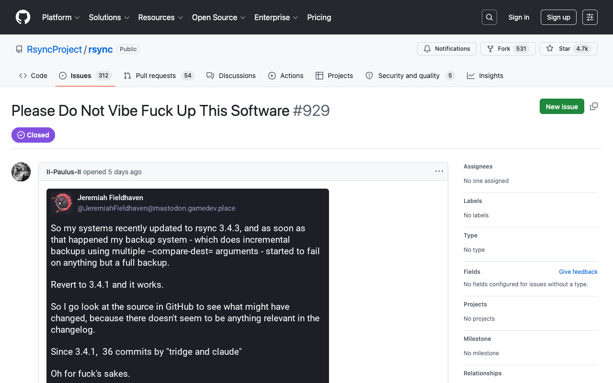

A simple distributional analysis of every rsync release with bug data. No model. No assumptions. Just placement.
In late May 2026, rsync blew up. GitHub, Hacker News, Lobsters: hundreds of people arguing about whether open-source maintainers can ship AI-written code and have it be reliable — and whether the people taking the code for free get to demand how it is made.
On May 30, 2026, a GitHub issue titled "Please Do Not Vibe Fuck Up This Software" was opened against the rsync repository. It attached a screenshot of a Mastodon post criticizing the project's use of Claude. No bug report. No technical content. What followed was extraordinary: 329 comments and counting, ranging from thoughtful concern to outright harassment.

The thread did not stop at words. One user posted My Little Pony drawings of themselves strangling the "project janitor that pushed vibecoded commits":
It spread to Hacker News and Lobsters, generating hundreds more comments. The central claim, repeated everywhere: Claude-assisted development introduced bugs into a previously stable tool.
People are very justifiably angry that a very stable, well trusted tool, has started to immediately go downhill… all because the main dev is vibecoding that software.
— fao_ on Hacker News
On Lobsters, user boramalper wrote:
It'd be interesting if someone actually did a timechart of regressions after each release (if at all possible) to see if the number actually went up recently or not.
— boramalper on Lobsters
User bitshift replied: "I would also love to see such a chart. It wouldn't be completely informative… But at least it would be something objective we could measure."
This analysis is that chart. One metric, every release, no model.
On the HN thread, user zos_kia pointed at the confound directly:
From a cursory look, it looks like a security fix in response to a CVE surfaced a coding error which has been present in the code since 2007. This is so banal that it's actually hilarious to see people lose their shit over it.
— zos_kia on Hacker News
On Lobsters, user jbert spelled out the causal chain:
The trigger for the increased volume of changes (and hence increased number of regressions) was the influx of (mostly) LLM-enabled security issues. i.e. the causal chain was: LLMs → more known security issues → more changes needed than usual → more regressions than usual.
— jbert on Lobsters
These users identified the exact confound: it wasn't AI writing the code that caused regressions. It was AI finding security holes that forced tridge to ship more changes than usual — and more changes means more regressions, regardless of who wrote them. This is not a Claude problem. It is a "more changes" problem. Tridge himself confirmed this causal chain in his response, describing how a flood of AI-generated CVE reports forced rapid, extensive changes to rsync's attack surface. A retired developer who would rather be sailing, he reached for Claude to help with the volume: writing test suites, adding defence-in-depth hardening, and working through the security backlog. He acknowledged the regressions in v3.4.3 but said he had deliberately prioritized security fixes over edge-case compatibility.
The analysis uses a single metric: bugs per 10 commits (bugs/10c). For each release, divide the number of bugs attributed to it by the number of commits in its range, then multiply by 10. This normalizes for release size.
Every commit on the default branch was ordered by committer date to produce a sequential timeline. Each git tag points to a specific commit in this timeline. A release's range is all commits between the previous tag and its own tag. Pre-release tags ("pre", "rc") are skipped as boundaries and absorbed into their final release. Every commit belongs to exactly one release.
Bug counts come from three sources: GitHub issues in the rsync repository, the rsync Bugzilla instance, and the rsync mailing list. Issues filed against the rsync project were collected via the GitHub REST API. Bugs from the mailing list were identified by parsing message subjects for bug report patterns and cross-referencing with the project's issue tracking. Bugzilla entries were collected via the Bugzilla API; each entry has a "Version" field that explicitly states which release the bug was reported against, and bugs are attributed to that release. GitHub issues and mailing-list bugs are attributed to the most recent release that shipped before the bug was reported.
The critics' claim is a simple comparison: did the rate go up? The simplest honest response is a simple rate. If the Claude releases sit in the middle of the historical distribution, the burden shifts to the critics to explain why this particular middle is somehow worse than all the other middles that came before it.
It does not control for commit complexity, security intensity, or bug severity. It does not distinguish between a one-line typo fix and a CVE patch. It is a blunt instrument. But the critics' accusation is also blunt: "Claude is making things worse." A blunt instrument is the fairest response.
Here is where these releases fall in the distribution of all prior releases:
Each dot is a release. The shaded green band is the interquartile range (IQR) — the middle 50% of historical releases, from 0.65 to 6.82 bugs/10c. Half of all historical releases fall inside this band, and half fall outside. The darker regions on either side are the lower and upper quarters. The Claude releases (green dots) both fall inside the IQR — their bug rates are indistinguishable from the typical historical range.
The historical mean is 7.60 bugs/10c, but this is driven by a bimodal distribution. v2.x releases average 2.04 bugs/10c; v3.x releases average 11.46. Even within v3.x, the Claude releases are unremarkable: v3.4.2 ranks 16th of 21 v3.x releases, v3.4.3 ranks 16th as well.
A runs test on the 35 non-Claude releases finds 14 runs (expected 18.5 under randomness, z=-1.54, p=0.123). There is no evidence of temporal clustering — the sequence is consistent with a random draw from the same distribution.
| Release | Bugs | Commits | Claude | Bugs/10c | Percentile |
|---|---|---|---|---|---|
| v2.4.6 | 2 | 13 | 0 | 1.54 | 46th percentile |
| v2.5.0 | 4 | 73 | 0 | 0.55 | 14th percentile |
| v2.5.1 | 4 | 69 | 0 | 0.58 | 17th percentile |
| v2.5.2 | 6 | 117 | 0 | 0.51 | 11th percentile |
| v2.5.4 | 5 | 21 | 0 | 2.38 | 57th percentile |
| v2.5.5 | 22 | 88 | 0 | 2.50 | 60th percentile |
| v2.5.6 | 14 | 239 | 0 | 0.59 | 20th percentile |
| v2.6.0 | 8 | 267 | 0 | 0.30 | 9th percentile |
| v2.6.1 | 5 | 444 | 0 | 0.11 | 0th percentile |
| v2.6.2 | 29 | 17 | 0 | 17.06 | 89th percentile |
| v2.6.3 | 49 | 381 | 0 | 1.29 | 37th percentile |
| v2.6.4 | 22 | 760 | 0 | 0.29 | 6th percentile |
| v2.6.5 | 16 | 146 | 0 | 1.10 | 34th percentile |
| v2.6.7 | 15 | 649 | 0 | 0.23 | 3rd percentile |
| v2.6.8 | 12 | 72 | 0 | 1.67 | 49th percentile |
| v2.6.9 | 53 | 261 | 0 | 2.03 | 51st percentile |
| v3.0.0 | 64 | 909 | 0 | 0.70 | 26th percentile |
| v3.0.1 | 6 | 102 | 0 | 0.59 | 23rd percentile |
| v3.0.2 | 10 | 9 | 0 | 11.11 | 83rd percentile |
| v3.0.3 | 22 | 55 | 0 | 4.00 | 71st percentile |
| v3.1.0 | 170 | 571 | 0 | 2.98 | 63rd percentile |
| v3.1.1 | 68 | 66 | 0 | 10.30 | 77th percentile |
| v3.1.2 | 55 | 57 | 0 | 9.65 | 74th percentile |
| v3.1.3 | 87 | 61 | 0 | 14.26 | 86th percentile |
| v3.2.0 | 24 | 304 | 0 | 0.79 | 29th percentile |
| v3.2.1 | 9 | 63 | 0 | 1.43 | 43rd percentile |
| v3.2.2 | 20 | 58 | 0 | 3.45 | 66th percentile |
| v3.2.3 | 168 | 157 | 0 | 10.70 | 80th percentile |
| v3.2.4 | 29 | 213 | 0 | 1.36 | 40th percentile |
| v3.2.5 | 12 | 53 | 0 | 2.26 | 54th percentile |
| v3.2.6 | 11 | 28 | 0 | 3.93 | 69th percentile |
| v3.2.7 | 128 | 60 | 0 | 21.33 | 94th percentile |
| v3.3.0 | 76 | 38 | 0 | 20.00 | 91st percentile |
| v3.4.0 | 6 | 60 | 0 | 1.00 | 31st percentile |
| v3.4.1 | 102 | 9 | 0 | 113.33 | 97th percentile |
| v3.4.2 | 4 | 50 | 9 | 0.80 | 31st percentile |
| v3.4.3 | 23 | 34 | 28 | 6.76 | 74th percentile |
…for the people saying things like "I'm a PhD from xyz uni and I'm telling you LLMs are just stochastic tools that make everything up and the world will fall apart if you use them", I'm here to tell you that you are out of date. The world of software engineering has changed dramatically in the last few months. The world of IT security and maintaining software in the face of the flood of reports has completely and utterly changed just in the last few weeks. Anything you learned about this stuff last year might as well be from another planet… Bottom line is I do know (well, roughly!) how LLMs work, but that doesn't make them not useful. It does mean you have to be cautious, but I am being cautious, or as cautious as I can be given my desire to be sailing and not dealing with a flood of gunk from so-called internet experts.
— Andrew Tridgell